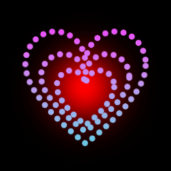
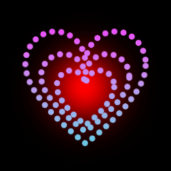

Штучний інтелект в медицині
Штучний інтелект (ШІ) - є однією з найбільш перспективних технологій, яка широко застосовується в медицині. За допомогою ШІ можна вирішувати багато завдань в медицині, від діагностики до лікування. Одним з найбільш поширених використань ШІ в медицині є діагностика. За допомогою ШІ можна аналізувати великі обсяги медичних даних та проводити точну діагностику захворювань. Наприклад, ШІ може допомогти виявити пухлини на знімках МРТ або КТ, а також проводити скринінг на різноманітні захворювання. Ще одним використанням ШІ в медицині є прогнозування захворювань. За допомогою аналізу медичних даних, ШІ може передбачити ризик розвитку захворювань, а також прогнозувати те, як буде розвиватися захворювання в майбутньому. Окрім того, ШІ може бути використаний у розробці нових методів лікування та моніторингу пацієнтів. Наприклад, ШІ може допомогти в плануванні індивідуального лікування для кожного пацієнта на основі його медичних даних, а також контролювати ефективність лікування та передбачити можливі ускладнення. Незважаючи на переваги використання ШІ в медицині, є й певні ризики, зокрема, пов'язані з конфіденційністю медичної інформації та недостатньою точністю алгоритмів. Однак, з правильним застосуванням, ШІ може значно покращити якість медичної діагностики та лікування, допомагаючи лікарів в прийнятті рішень та покращувати результати лікування пацієнтів. На сьогоднішній день вже існує багато прикладів успішного використання ШІ в медицині. Наприклад, в Ізраїлі ШІ використовується для розробки індивідуальних розкладів доз ліків для пацієнтів з онкологічними захворюваннями, що дозволяє досягати кращих результатів лікування. У США ШІ використовується для аналізу даних зі стоматологічних карток пацієнтів та виявлення хвороб ясен та зубів на ранній стадії. ШІ є перспективною технологією, яка може значно покращити якість медичної діагностики та лікування. Однак, важливо враховувати потенційні ризики та використовувати ШІ з обережністю, зберігаючи конфіденційність медичної інформації та дотримуючись етичних принципів. Загалом, ШІ може стати важливим інструментом для медичної галузі, що допоможе покращити здоров'я та якість життя людей.